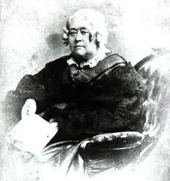
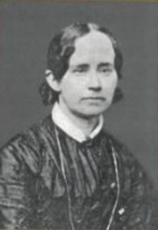

Elizabeth Palmer Peadbody
Elizabeth Peabody was born on May 16th 1804 in Billerica, Massachusetts. She was an ardent education reformer who would go on to open the first English-Language kindergarten in the United States. She became friends with educational reformer Horace Mann who would later marry her sister Mary.
Mary Tyler Mann
Mary Mann (born Mary Tyler Peabody) was born on November 16, 1806 in Cambridge Massachusetts. She was an abolitionist and an education reformer who worked closely with her sister and her husband, Horace Mann, and would go on to write Horace’s biography Life and Works of Horace Mann.
Purpose
The 19th century was a time of dramatic change in regards to education in America, and a key contributor to common school reformation was Horace Mann. Horace’s wife, Mary Mann, and her sister, Elizabeth Peabody, were also education reformers who specialized in the education of young children. To ensure the Peabody sisters are not underrepresented in the conversation surrounding common school reformation during their time, the goal of this website is to serve as a compilation of works related their legacy.